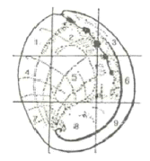

수산양식기사 (2007-03-04 기출문제)
1과목: 어류양식학
1. F1 잡종을 어류 양식이 실제로 이용하고 있는 양식종은?
- 잉어
- 붕어
- 방어
- 틸라피아
(정답률: 86%)

2. 같은 지역에서 잉어를 양식할 때 성장이 가장 느린 양식방법은?
- 정수식 지중양식
- 호소에서의 가두리양식
- 저수지 양식
- 유수식 양식
(정답률: 44%)
3. 다음 중 방류재포 양식을 설명한 것은?
- 호흡에 필요한 산소는 주로 공기 중의 산소가 물 표면을 통과하여 용해되거나 에어레이션을 통해 공급된다.
- 완전균형 사료를 공급해야 하며, 시설은 내만이나 호소 등의 표층에 설치한다.
- 생활노폐물의 제거는 여과층에 발생한 미생물의 생화학적 작용에 의존한다.
- 식용어 생산을 위한 시설이나 사료가 필요하지 않고, 천연사료에 의존한다.
(정답률: 64%)
4. 종묘생산을 위한 인공수정시 건식 수정방법이 주로 쓰이는 어종은?
- 넙치
- 연어
- 조피볼락
- 뱀장어
(정답률: 43%)
5. Artemia 의 부화조건으로 틀린 것은?
- 적정농도의 해수를 사용한다.
- 부화수온은 28℃ 전후이다.
- 강한 폭기를 계속한다.
- 조도는 7000lux로 유지한다.
(정답률: 79%)
6. 넙치를 육상사육수조에서 양성하고자 한다. 넙치의 적정 수온범위 내에서 수조의 환수율이 10~12회전/일 인 경우 m2당 양성밀도로 가장 적당한 것은?
- 4kg 이하
- 5~15kg
- 20~30kg
- 35~50kg
(정답률: 87%)
7. 미꾸라지 당년생 육성시 1일 먹이의 양은 체중비 몇 % 정도가 적당한가?
- 2~5%
- 11~20%
- 21~30%
- 31~40%
(정답률: 83%)
8. 해산어류의 양성과 관련된 일반적 특징으로 틀린 것은?
- 방어 종묘 채집시 5~6월에 어획되는 8~50g 정도의 것이 가장 좋다.
- 넙치는 전장 5~8cm의 것을 종묘로 하는 것이 좋다.
- 참돔은 5℃이하의 수온에서 약 80%이상 월동 가능하다.
- 자주복의 성장은 1년째에 수온이 16℃로 저하될 때까지의 기간이 왕성하므로 이 기간이 긴 곳을 양성장으로 택하는 것이 좋다.
(정답률: 85%)
9. 방어를 축제식으로 양식하고자 한다. m2당 방어 치어의 일반적인 방양마릿수는?
- 0.1마리 이하
- 0.3~3.0 마리
- 5.0~10.0 마리
- 15.0~30.0 마리
(정답률: 58%)
10. 사료의 결함으로 등여윔병에 걸렸을 경우 주로 관계가 되는 성분은?
- 단백질
- 지방
- 탄수화물
- 비타민 B군
(정답률: 44%)
11. 잉어의 대형 종묘생산은 3~4cm 정도 되는 소형 종묘를 어느 정도의 크기로 키우는 과정인가?
- 5~10cm
- 10~15cm
- 15~20cm
- 25~30cm
(정답률: 30%)
12. 다음 중 구중(口中) 부화를 하지 않는 종류는?
- Tilapia zilli
- Sarotherodon gaillaeus
- Oreochromis niloticus
- Oreochromis mossambicus
(정답률: 55%)
13. 돌돔의 자치어 사육의 설명이 잘못된 것은?
- 수온 21~22℃에서 수정 후 약 29~30시간 안에 부화한다.
- 부화 후 40일까지 효모와 클로렐라를 먹인다.
- 돌돔 난의 크기는 약 0.77~0.98mm 이다.
- 수온 20℃에서 부화 후 3일이 지나면 난황을 거의 흡수한다.
(정답률: 77%)
14. 은연어의 해수양식에서 사방 5~10cm되는 가두리에 1m2당 몇 kg 정도까지 수용하면 적정한가?
- 2kg
- 5kg
- 10kg
- 15kg
(정답률: 56%)
15. 수온 15~17℃일 때 복어알의 부화일수는?
- 약 3일
- 약 5일
- 약 10일
- 약 15일
(정답률: 75%)
16. 참돔은 환경조건, 먹이와 성숙에 따라 체색이 변화된다. 참돔의 체색변화와 관계없는 것은?
- 표층의 강한 광(光)에서 양성한 것은 검은 색이 많다.
- 카로티노이드 색소가 많은 갑각류를 먹은 것은 붉은 색이다.
- 산란기 때는 암수 모두 혼인색을 띄게 되어 체색이 검게 변한다.
- 성숙한 수컷은 두부가 약간 날카롭고 몸 빛깔은 검은색이 짙다.
(정답률: 93%)
17. 동물먹이생물의 번식법을 열거한 것으로 틀린 것은?
- 물벼룩은 단위생식을 하며 자충을 산출한다.
- 물벼룩은 유성생식으로 내구란을 산출하여 증식을 억제한다.
- Rotifer는 단위생식만 한다.
- 알테미아는 cyst의 형태로 난을 산출한다.
(정답률: 58%)
18. 종묘생산을 위한 잉어 친어의 설명으로 틀린 것은?
- 길러낸 것 중에서 빨리 자라고 튼튼하며 계통이 확실한 것을 선택한다.
- 친어는 가급적 저밀도로 수용하는 것이 좋다.
- 수컷은 7~13년생, 암컷은 3~5년생이 좋다.
- 산란용 친어는 3~4월에 암수를 각각 다른 못에 분리하여 수용한다.
(정답률: 73%)
19. 실뱀장어의 소상과 관련된 설명 중 틀린 것은?
- 주로 밤에 소상한다.
- 대조시에 많이 소상한다.
- 수온이 낮은(8℃ 이하) 이른 봄에 많이 소상한다.
- 담수가 내려가는데 소상한다.
(정답률: 67%)
20. 난 발생시 제 1난할(cleavage) 억제로 유도되는 개체는?
- 정상 2배체
- 3배체
- 4배체
- 자성발생 반수체
(정답률: 45%)
2과목: 무척추동물양식학
21. 우렁쉥이의 서식장으로 적당하지 않은 곳은?
- 수온 범위가 5~24℃인 곳
- 외해의 영향을 많이 받는 곳
- 20m 내외의 수심이 암초나 자갈로 되어 있는 곳
- 여름철에 저비중인 곳
(정답률: 67%)
22. 고막의 주 서식장으로 가장 적합한 것은?
- 간조시에 노출되는 조간대
- 수심 10~30m 정도의 사니질
- 저조선으로부터 20m 정도의 개흙질
- 간출되지 않은 암반
(정답률: 63%)
23. 먹이생물인 규조류의 배양속도를 현장에서 가장 편리하고 쉽게 측정할 수 있는 방법은?
- 침전부피 측정
- 건조중량평량
- 세포수 산정법
- HPLC 측정법
(정답률: 65%)
24. 라마르크 대합과 비교하여 대합의 형태적 특징을 가장 잘 나타낸 것은?
- 외투막돌기는 가늘게 분기하여 복잡하다.
- 패각의 무늬는 성장한 후에는 변화가 없다.
- 입수관 구연부에 있는 촉수의 구조가 단조롭다.
- 패각의 두께가 두꺼운 편이다.
(정답률: 65%)
25. 참담치를 내해나 내안에서 수하식으로 양식할 수 있는 장소로 가장 적합한 곳은?
- 조간대가 발달한 암초지대의 곳
- 육수의 영향을 많이 받는 수심이 얕은 내만인 곳
- 해수비중이 높고 수심이 다소 깊으며 시설물이 유지될 수 있는 곳
- 영양염류가 풍부하고 해조류와 해적생물이 비교적 많은 곳
(정답률: 48%)
26. 가리비 유생이 수정 후 부유생물을 거쳐 부착생활에 들어갈 때까지의 기간으로 가장 적합한 것은?
- 5~10일
- 10~20일
- 20~30일
- 30~40일
(정답률: 41%)
27. 그림 중의 손상위치 중 어느 곳에 손상을 입은 것이 종묘로 사용할 때 가장 위험한가?

- 1
- 3
- 4
- 5
(정답률: 79%)
28. 수하식 굴 양성시 굴의 부착성 해적을 막는 방법으로 가장 거리가 먼 것은?
- 정체된 내만에서는 심층 수하하여 해적생물의 부착을 피한다.
- 부착생물의 부착성기와 굴의 수하시기를 조절한다.
- 수하양성 시 수하연의 길이를 짧게 한다.
- 부착생물의 부착성기에 수하연을 심층으로 침하시킨다.
(정답률: 62%)
29. 성숙한 피조개 정소의 색으로 맞는 것은?
- 담홍색
- 담황색
- 담록색
- 담청색
(정답률: 74%)
30. 이동이 심한 조개류의 양성시설로 우리나라 서·남해안의 간석지에 널리 보급되어 있는 방식은?
- 제방식
- 그물가두리식
- 조위망식
- 나뭇가지식
(정답률: 75%)
31. 다음 전복의 모패 선정관리에 대한 내용 중 적합하지 않는 것은?
- 인공 종묘생산에서는 까막전복이나 참전복이 유리하다.
- 참전복은 가온해수사육으로 5~6월에 조기 산란시킨다.
- 참전복의 채란에 적합한 적산수온은 3500℃ 이상이다.
- 산란유발은 간출과 자외선 조사해수 자극을 병행하는 것이 옳다.
(정답률: 69%)
32. 다음 중 바지락 양식장 적지조건에 해당되지 않는 것은?
- 담수 영향이 없는 곳
- 지반이 안정되고 해수유통이 좋은 곳
- 2~3시간 간출되는 곳부터 수심 3~4m 사이
- 해수 비중이 1.018~1.027인 곳
(정답률: 65%)
33. 문어의 양성 적수온으로 가장 적합한 것은?
- 10℃이하
- 10~15℃
- 15~20℃
- 26℃이상
(정답률: 40%)
34. 다음 중 서식지 저질의 특징이 다른 것은?
- 대합
- 바지락
- 개량조개
- 왕우럭
(정답률: 38%)
35. 가리비 치패를 수용, 관리하는 중간육성의 주 목적은?
- 성장의 촉진
- 해적생물의 피해 방지
- 성장 억제
- 대량 폐사 방지
(정답률: 42%)
36. 단련 종굴의 특징으로 틀린 것은?
- 크기가 작아서 취급이 쉽다.
- 양성기간이 길다.
- 취급시 탈락 개체수가 적다.
- 보통 종묘에 비해서 저항력이 강하다.
(정답률: 75%)
37. 대합(백합)의 부유치패가 가장 많이 침하하는 대조시의 노출선은?
- 1~2시간선
- 2~3시간선
- 5~6시간선
- 7~7시간선
(정답률: 56%)
38. 우리나라에 서식하는 전복류 중 한류계에 속하는 전복은?
- 말전복
- 참전복
- 까막전복
- 씨볼트 전복
(정답률: 74%)
39. 다음 중 유생기에서 반드시 필로소마(Phyllosoma)기를 거치는 것은?
- 보리새우
- 닭새우
- 꽃게
- 대하
(정답률: 84%)
40. 보리새우과의 보리새우와 대하의 교미행동에 대한 설명이 옳은 것은?
- 보리새우와 대하 모두 교미한 그 해 모두 산란을 마친다.
- 보리새우는 교미를 여러번 하지만 대하는 한번만 한다.
- 교미 후 보리새우은 교미전이 없지만 대하는 교미전을 가지고 있다.
- 대하는 교미 후 바로 수정하여 알을 발생시킨다.
(정답률: 53%)
3과목: 해조류양식학
41. 엽면시비의 장점이 아닌 것은?
- 지시작업이 비교적 편하다.
- 적은 양의 비료로 효과가 크다.
- 시간의 제약이 없다.
- 시비효과를 측정할 수 있다.
(정답률: 68%)
42. 김 사상체 배양에서 미량 금속의 흡수가 효과적으로 되기 위해서 첨가하는 것은?
- EDTA
- Vitamin B12
- KNO3
- Na2-glycerophosphate
(정답률: 75%)
43. 우뭇가사리의 배우체와 사분포자체의 가장 뚜렷한 구별점은?
- 영양번식력의 유무
- 생육시기의 차이
- 내부조직의 차이
- 생식기탁(생식기 가지)의 모양
(정답률: 60%)
44. 톳과 거의 같은 수위에 무성하게 군락을 이루어 톳의 증식에 해를 끼치는 것은?
- 우뭇가사리
- 지충이
- 모자반
- 꼬시래기
(정답률: 74%)
45. 양식 김 중에서 영성이 가장 강한 김은?
- 참김
- 방사무늬김
- 둥근김
- 짝김
(정답률: 80%)
46. 김사상체의 성질과 조도의 관계가 틀린 것은?
- 사상체는 2000lux 보다 다소 높은 조도에서 잘 생장한다.
- 무기질 사상체는 3500lux가 최적 생장조도이다.
- 2000~4000lux의 범위에서 자란 참김 사상체간에는 포자방출에 차이가 없다.
- 4000lux에서 자란 둥근김, 긴잎돌김의 사상체는 고조도에서 각포자의 방출이 많다.
(정답률: 50%)
47. 톳 양식에 관한 설명 중 옳은 것은?
- 톳은 조체가 크고 부력이 있어서 언제나 수면에 떠있다.
- 톳은 영양번식성이 있어서 시설한 친승을 해마다 바꿀 필요가 없다.
- 톳은 미역보다 성장이 늦다.
- 톳은 조수가 빠른 곳에서 주로 양식된다.
(정답률: 78%)
48. 미역과 동일한 세대 교번을 하는 조류는?
- 김
- 청각
- 톳
- 다시마
(정답률: 58%)
49. 조가비 사상체의 배양을 하는데 있어서 물갈이 후에 갑작스럽게 사상체의 색이 변한 일이 생겼다면 통상적으로 어떤 점을 먼저 점검해야 하는가?
- 비중의 급변상태
- 조도의 급변상태
- 수온의 급변상태
- 영양염 관계
(정답률: 60%)
50. 뜬발의 성질과 가장 거리가 먼 것은?
- 수광시간이 길다.
- 김발의 수명이 짧다.
- 2차아에 의한 번식이 많이 있다.
- 수심이 깊은 외해에서도 양식이 가능하다.
(정답률: 45%)
51. 다음 중 미역 초기배양에서 배우체의 비료주기에 대한 내용으로 가장 적합한 것은?
- 배우체가 건강할 경우에도 비료주기는 반드시 필요하다.
- 비료는 해수 1L에 질산나트륨 0.02g, 제 2인산나트륨 0.1g을 첨가한다.
- 수조에 약품을 직접 넣거나 한꺼번에 너무 많이 주면 오히려 약해가 있다.
- 물갈이 전에 약품을 처리하여야 한다.
(정답률: 66%)
52. 출고한 김냉장 씨발(종망)은 어떻게 처리하는가?
- 밀봉상태로 24시간 이상 상온체 방치 후 시설
- 밀봉된 것을 풀어서 완전해동 후 시설
- 밀봉상태로 4시간 이내 운반하고 해수에 수용 후 시설
- 밀봉상태로 4시간 이상 지난 후 시설
(정답률: 59%)
53. 홑파래 접합자 배양법으로 알맞은 것은?
- 초기의 저수온기에는 광선을 충분히 주어 생장을 촉진시킨다.
- 잠생물 발생의 억제를 위하여 공기 중 노출은 삼가 한다.
- 배양해수는 여과 해수를 매주 1회 전량 또는 절반으로 갈아준다.
- 채묘된 접합자판은 다른 대형 수조의 바닥에 눕혀서 배양한다.
(정답률: 56%)
54. 탄산칼슘이 김사상체 배양의 조가비 표면에 침착하여 나타나는 것은?
- 녹반병
- 닭살
- 백반병
- 황반병
(정답률: 42%)
55. 김 사상체 배양을 위한 포자는?
- 각포자
- 중성포자
- 과포자
- 사분포자
(정답률: 44%)
56. 미역 생활사의 순서 중 맞는 것은?
- 포자엽→유주자→암수배우체→수정란→아포체→유엽
- 포자엽→유주자→접합자→암수배우체→아포제→유엽
- 유주자→포자체→암수배우체→접합자→아포체→유엽
- 유주자→암수배우제→유엽체→접합자→아포체→포자
(정답률: 34%)
57. 다음 중 미역의 채묘 적온은?
- 15℃ 전후
- 17~20℃
- 20~23℃
- 23℃ 이상
(정답률: 48%)
58. 풀가사리의 반상근에서 직립체가 돋아나는 시기는?
- 12~2월
- 9~11월
- 6~8월
- 3~5월
(정답률: 50%)
59. 다시마 종묘를 촉성배양법으로 배양하면 유주자 착생 후 얼마 만에 아포체가 나타나는가?
- 1주일 후
- 10일 후
- 40일 후
- 60일 후
(정답률: 50%)
60. 미역의 가이식 적지 선정 방법으로 틀린 것은?
- 조류의 소통이 좋은 곳
- 잡생물의 부착이 적은 곳
- 외양수의 영향이 강한 곳
- 해안선 가까이의 비교적 투명도가 낮고 수온 변동이 적은 곳
(정답률: 53%)
4과목: 양식장환경
61. 홍조류가 다른 해조류와 차이가 나는 근거가 되는 것은?
- 틸라코이드
- 클로로필 a
- 카로틴
- 파이코빌린
(정답률: 28%)
62. 연골어류의 삼투조절 설명 중 가장 거리가 먼 것은?
- 삼투압을 해수보다 약간 높게 유지하고 있다.
- 몸 표면 전체는 용액의 투과성이 거의 없다.
- 콩팥의 세뇨관이 요소를 능동적으로 재흡수함에 따라 행해진다.
- 물의 이동은 한결같이 아가미나 구상상피를 통해서 이루어진다.
(정답률: 39%)
63. 어류의 지느러미에 대한 설명 중 옳은 것은?
- 원구류는 지느러미가 잘 발달되었다.
- 상어 수컷의 뒷지느러미는 교미기를 이룬다.
- 망둑어과 어류의 가슴지느러미는 유하되어 흡반을 형성한다.
- 지느러미의 극조와 연조의 수는 분류의 중요한 형질이다.
(정답률: 54%)
64. 보리새우 유생기의 발육단계 중 다음 번 탈피시 까지 그 기간이 가장 짧은 것은?
- 미시스
- 조에아
- 노우플리우스
- 포우스트라바
(정답률: 43%)
65. 플랑크톤 등을 먹지 않고 대형 수초만을 먹고 사는 초식성 틸라피아는?
- Oreochromis aureus
- Sarotherodon melanotheron
- Oreochromis hunteri
- Tilapia zilli
(정답률: 50%)
66. 어류의 산소 소비량에 대한 설명 중 틀린 것은?
- 어류의 에너지 대사를 말할 때 중요한 지표가 된다.
- 대부분의 어류에 있어서는 성장과 함께 산소소비량이 감소한다.
- 송어 Salmo trutta는 산란기가 되면 암컷의 산소소비량이 수컷보다 증가한다.
- 용존산소량의 감소나 용존탄산가스량의 증가는 결과적으로는 어류의 산소소비량의 감소현상으로 나타난다.
(정답률: 13%)
67. 연체동물의 특징으로 틀린 것은?
- 몸은 일반적으로 좌우대칭이고, 단판류를 제외하고는 체절구조가 없으며, 체표에는 외투막을 가진다.
- 신경계는 쌍을 이룬 뇌신경절, 흉신경절, 족신경절, 내장신경절을 가지며, 발생도중에 trochophore의 단계를 거치는 경우가 많다.
- 개방혈관계를 가지며, 가스교환은 아가미, 폐, 외투막 및 체표로 한다.
- 체강을 격막에 의해 나누어지고, 소화계는 간단하며, 치설과 악판등의 저작기관이 없다.
(정답률: 22%)
68. 전갱이과에 속하는 종류는
- 삼치
- 황다랑어
- 눈다랑어
- 방어
(정답률: 54%)
69. 가물치류가 알을 보호하는 방법은?
- 구멍을 파서 보호
- 돌잎에 동굴을 만들어서 보호
- 수초나 거품으로 집을 지어 보호
- 전신의 일부 또는 전부를 이용하여 보호
(정답률: 48%)
70. 다음 중 전복 유생의 먹이로 적당하지 않은 것은?
- Navicula sp.
- Cocconeis sp.
- Platymonas sp.
- Chlorella sp.
(정답률: 67%)
71. 경골어류의 아가미에서 염세포(salt cell)의 기능은?
- 체외로 염류를 배출하여 삼투조절
- 체내로 염류를 흡수하여 삼투조절
- 체외로부터 물을 흡수하여 삼투조절
- 체내의 과다한 물을 배출하여 삼투조절
(정답률: 50%)
72. 따개비류는 다음 중 어디에 속하는 것은?
- 십각류
- 단각류
- 만각류
- 새미류
(정답률: 27%)
73. 다음 해조류 중 한천의 원료로 사용되는 것은?
- 파래, 청각
- 미역, 다시마
- 톳, 모자반
- 우뭇가사리, 풀가사리
(정답률: 67%)
74. 톳의 영양번식과 가장 관련이 깊은 것은?
- 배아
- 배아지
- 포복지
- 연쇄체
(정답률: 47%)
75. 규조류와 같은 식물성 플랑크톤을 즐겨 먹고 사는 어류만으로 짝지어진 것은?
- 은어, 개복치
- 정어리, 전어
- 돌묵상어, 명태
- 초어, 병어
(정답률: 42%)
76. 어류의 생식선 자극 호르몬에 대한 설명 중 바르게 된 것은?
- 뇌하수체의 전엽단부의 대부분을 차지하며, 에리드로신에 잘 염색되는 세포에서 생산, 분비된다.
- 어류의 간신선을 자극하여 코티졸이나 코티존의 생산, 분비를 촉진한다.
- 뇌하수체 전엽주부에서 생산, 분비되고 당단백질을 함유한 과립을 세포질 가운데 많이 가진다.
- 뇌하수체 중엽에서 생산, 분비되는 호르몬이다.
(정답률: 53%)
77. 동물문의 이름을 계통학상의 순서대로 옯게 배열한 것은?
- 척추-원색-자포-편형-원생
- 척추-극피-원색-절지-환형
- 척추-원색-절지-극피-편형
- 척추-원색-극피-절지-편형
(정답률: 28%)
78. 다음 중 난태생어류는?
- 송어
- 잉어
- 조피볼락
- 은상어
(정답률: 54%)
79. 다음 중 굴의 식성에 관한 설명으로 잘못된 것은?
- 주위의 해수를 여과하여 그 부유물을 먹는 여과식자이다.
- 아가미는 섬모운동으로 수류를 일으켜 먹이를 외투강의 임수실로 들여 보낸다.
- 굴의 소화관 안에는 해수 중에 있던 많은 부유물, 즉 유기물 찌꺼기, 규조, 편모충류, 각종 무척추동물의 유생, 모래, 개흙질 등이 발견된다.
- 부착성 규조를 즐겨 먹는다.
(정답률: 45%)
80. 다음의 어류 중 측편형 체형을 가지는 종류가 아닌 것은?
- 전어, 쥐치
- 참돔, 돌돔
- 양태, 아귀
- 망상어, 자리돔
(정답률: 35%)
5과목: 수산질병학
81. 은어 사육을 위하여 콘크리트 사각형 사육지를 만들려고 할 때의 주의사항 중 잘못된 것은?
- 바닥은 1/50~1/20의 경사를 만든다.
- 대량의 주, 배수가 쉽게 될 수 있도록 주, 배수구를 크게 만든다.
- 물을 회전시키기 위해서는 주수하는 물이 벽에 부딪치도록 하고 배수구는 못의 중앙에 설치한다.
- 배수부에서는 집수부를 만들어 배수포획을 할 때 집어할 수 있게 한다.
(정답률: 53%)
82. 용존산소 용해도에 관한 설명 중 맞는 것은?
- 산소의 용해도는 기포의 크기가 클수록 작아진다.
- 산소의 용해도는 수온이 높을수록 커진다.
- 산소의 용해도는 염분의 농도가 높을수록 크다.
- 해수는 담수보다 산소용해도가 크다.
(정답률: 57%)
83. 다음 중 적조생물로서 보편적이기는 하나 피해가 가장적은 것은?
- 규조류
- 황갈편조류
- 갈색편조류
- 와편모조류
(정답률: 53%)
84. 강벽(core)에 대한 설명으로 옳은 것은?
- 못의 한쪽에 배수구를 만들 때 수문장치와 어류의 포획을 쉽게 하기 위해 설치하는 장치
- 큰 양어지의 경우 홍수 때 수위가 높아져 물이 못둑을 넘는 경우를 막기 위한 것으로 못 속에 필요 이상의 물이 들어가지 않도록 한 장치
- 모래가 많은 곳에서 누수가 심하므로 못둑의 가운데에 점토질을 넣어 누수를 방지하는 장치
- 수문에 양식중의 어류가 주수와 배수를 할 때 도망가지 못하게 하는 장치
(정답률: 58%)
85. 다음 중 외양에서 늦여름에 가장 많이 발생하는 적조생물은?
- 코클로디늄
- 유글레나
- 김노디늄
- 암피포다
(정답률: 38%)
86. 다음 중 보상깊이를 바르게 설명한 것은?
- 투명도와 같은 깊이
- 동물플랑크톤이 가장 많이 분포하는 깊이
- 산소이 공급량과 소비량이 같게 되는 깊이
- 산소의 공급량이 최대로 되는 깊이
(정답률: 67%)
87. 순환여과식 양식장의 고형 오물제거시설로 침전조를 이용한 방법을 택했을 때, 다음 설명 중 틀린 것은?
- 사육조에서 나오는 배출수에 섞여있는 고형물 중 작은 입자는 물이 빠르게 흐르게 되는 곳에서는 침전하지 않는다.
- 침전조는 클수록, 또 침전조에서 물이 통과하는 시간이 짧을수록 침전이 잘 된다.
- 사육조에서 나오는 물을 침전시키는 제 1차 침전조는 사육조와 생물여과조 사이에 설치해야 한다.
- 침전조로 들어가는 물은 표면 가까이에서 들어가게 하고, 나가는 물도 표면 가까이에서 빠져 나가게 함으로서 바닥에 일단 침전된 찌꺼기가 다시 떠오르는 것을 방지할 수 있다.
(정답률: 63%)
88. 부영양화가 진행되려면 어떠한 조건을 구비해야 하는가?
- 물이 머무는 시간이 짧을 것
- 물의 교환율이 높을 것
- 식물플랑크톤이 자라며 유소기 느릴 것
- 수량 당 빛을 받는 면적이 될 수 있는 한 적을 것
(정답률: 90%)
89. 어류에 유독한 NH3 이온의 수중함량 비율이 가장 높아지는 경우는?
- 수온과 pH가 둘 다 낮을 때
- 수온이 높고 pH가 낮을 때
- 수온이 낮고 pH가 높을 때
- 수온과 pH가 둘다 높을 때
(정답률: 50%)
90. 다음 중 생물 부착막 여과와 가장 거리가 먼 것은?
- 살수식여과
- 침수식여과
- 회전원판식여과
- 활성오니법여과
(정답률: 77%)
91. 사육 수조에서 고형오멸을 제거하는데 영향을 주는 주요요인은?
- 수용된 물고기의 종류
- 수용된 물고기의 성별
- 사육 수조의 크기
- 사육수의 수온
(정답률: 75%)
92. 다음 중 일반적으로 산소가 가장 많이 녹아있는 곳에사는 어류는?
- 따뜻한 지수환경에서 사는 어류
- 따뜻한 유수환경에서 사는 어류
- 찬 지수환경에서 사는 어류
- 찬 유수환경에서 사는 어류
(정답률: 78%)
93. 폐쇄적 순환양식장에서 사용하는 생물학적 여과의 유해물질 분해단계를 바르게 나타낸 것은?
- 무기물의 유기물화→질산화작용→탈질화작용
- 유기물의 무기물화→질산화작용→탈질화작용
- 무기물의 유기물화→탈질화작용→질산화작용
- 유기물의 무기물화→암모니아화작용→탈질화작용
(정답률: 62%)
94. 노지 양어지에서 플랑크톤의 발생정도를 측정하는데 많이 이용되는 손쉬운 방법은?
- 탁도 측정
- 투시도 측정
- 투명도 측정
- 클로로필양 측정
(정답률: 54%)
95. 순환여과식 양어지의 물속에 있는 암모니아의 양을 최소한으로 유지시킬 수 있는 효율적인 방법은?
- pH의 조정
- 물의 온도 상승
- 기계적 여과
- 생물학적 여과
(정답률: 64%)
96. 수중의 질산화 반응에 관한 내용이 옳지 않는 것은?
- 질산화반응에 의하여 형성되는 최종물질은 NO3-이다.
- 질산화 박테리아는 화학무기영양계(chemolithotroph)에 속한다.
- 질산화 박테리아는 그 물질 대사를 위하여 유기질 탄소를 필요로 한다.
- 유기질 질소는 유기질 탄소보다 느리게 산화된다.
(정답률: 32%)
97. 물속에 용해되어 있는 암모니아에 대한 설명으로 틀린 것은?
- pH가 높은 알칼리성일수록 유독한 이온화되지 않은 암모니아의 비율이 많아진다.
- pH가 1단위 만큼 감소할수록 이온화되지 않은 암모니아의 양은 약 10배로 증가된다.
- 암모니아는 담수에서는 독성이 적지만 해수에서는 그 독성이 대단히 강하게 나타난다.
- 용존산소량이 증가하면 이온화되지 않은 암모니아의 독성이 감소된다.
(정답률: 40%)
98. 다음 유해물질 중 가장 낮은 농도로도 양식어류에 유독한 것은?
- 암모니아
- 이산화탄소
- 아질산
- 황화수소
(정답률: 54%)
99. 양어장에서 사용하는 원심펌프는 흡입 양정이 과다하면 캐비테이션의 발생으로 유량 및 압력이 낮아지거나 흡상작용을 상실하게 된다. 여기서 캐비테이션이란?
- 유수 중에서 국부적으로 진공이 발생하면 물이 기화 하여 미세한 기포가 발생하는 현상이다.
- 용존산소량이 풍부한 물을 양수하면 기포가 생기는 현상이다.
- 부유 현탁물이 많은 물을 양수할 때 일시적으로 펌프가 막히는 현상이다.
- 수위의 차가 심할 때 양수함을써 압력차 때문에 유속이 낮아지는 현상이다.
(정답률: 54%)
100. 다음 중 패류 종묘배양장의 종묘 사육수 주수용 용수에 있는 병원성 미생물을 제거하기 위한 적합한 방법은?
- 자외선 조사
- 염소제 살포
- 방사선 조사
- 모래여과
(정답률: 66%)